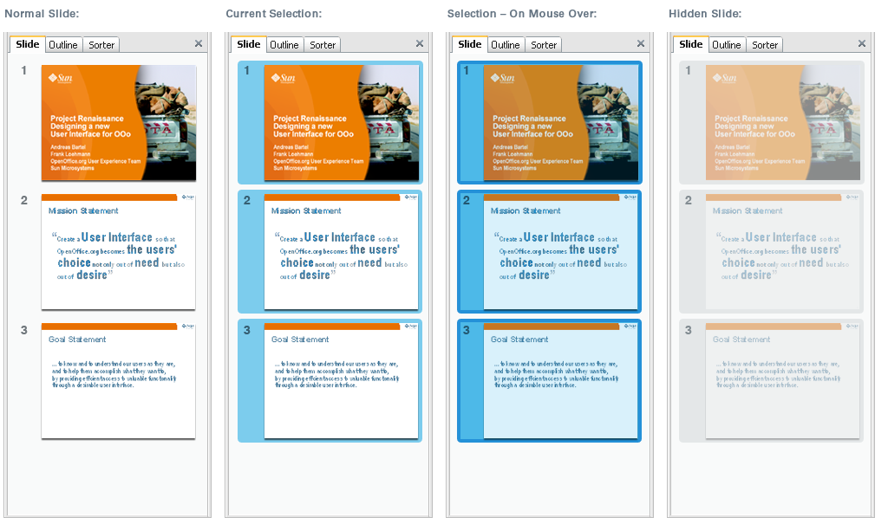
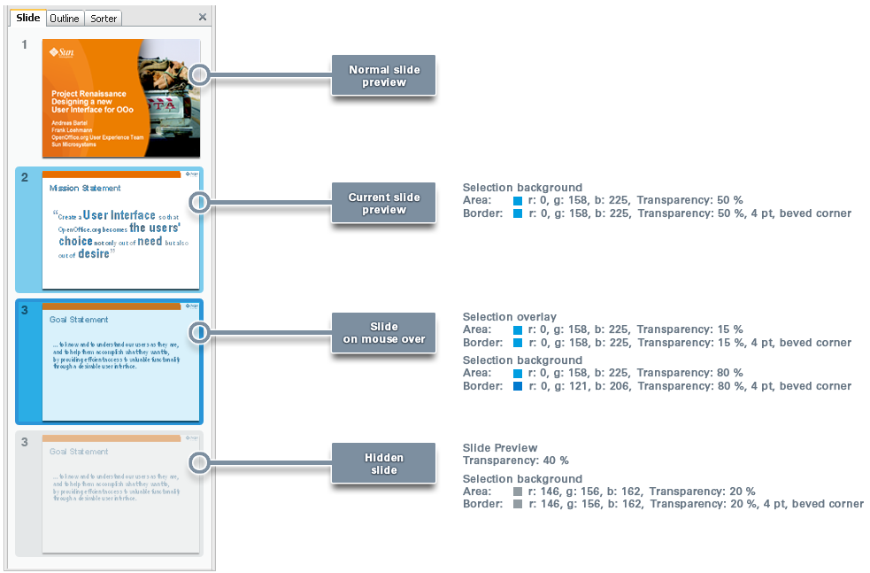
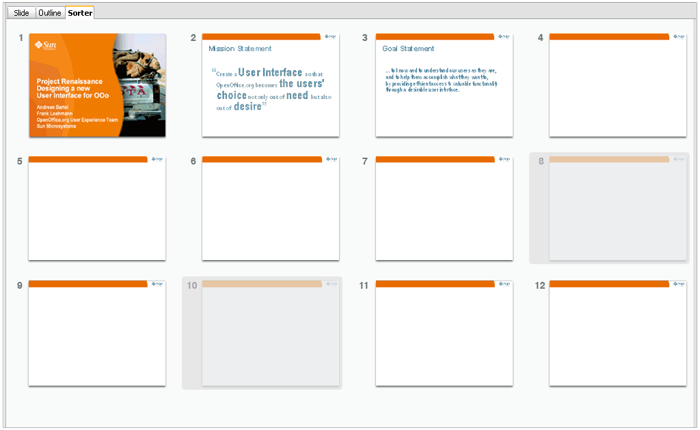

home
»
ui
»
VisualDesign
Visual Design
|
UI
| Impress
Impress Slide Selection
Slide Selection ::
Design proposal
|
Design Specification
Slide Sorter ::
Design proposal
|
New Icons
Impress Slide Selection
Slide Selection Proposal:

Design Specification:

Note: This design proposal is
a part of the renaissance project
Slide Sorting Proposal:

Note: This design proposal is
a part of the renaissance project
Moving Slides Icon:
Please find new icons here:
moving slide icons
Last change: 01/06/2010 by
sts